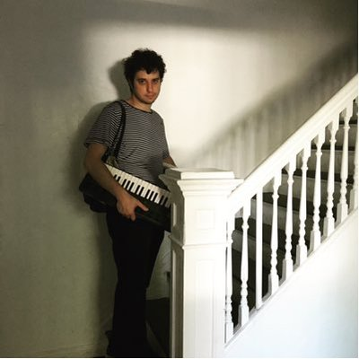

LA014: Old Saw - "Country Tropics"
Release: 1/29/22

-Geographically: a watertower, a mechanical bull rental agency, a back porch, a taxidermy shop, a local church choir, a garden with singing vines, voltage hum of the electric fence on Pulp mill bridge road. Roads as veins. Ringing the cloth out fully everytime, beginning to do this thing like a ritual. -extremely elemental, almost skeletally simple structures, but done with a wide, spiraling, spectral band of instruments -playing a country tune but dragging it out across a whole afternoon, trying to drain a chord of everything before moving on -drawing in by slowness, in musical forms and natural forms. Dissolving and refracting music of the actual country. -density of the NE “tropics.” looking at the land and it looking back. -rusting double helix, fractures, branches, foglights

RIYL: Boxhead Ensemble, Duane Pitre
Format: LP / DIG
Bio:
Ben Varian is a songwriter and multi-instrumentalist based in Los Angeles. His music skips across the surfaces of soft rock, fake jazz, synth funk and musique concrete, before plunging into the depths of DIY pop. Sounding equally ambitious and homemade, Ben’s songs explore life’s major mysteries without filtering out the jokes and misdirections.